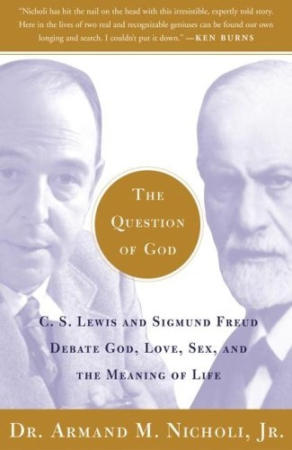

|
|  |
The Question of God: C.S. Lewis and Sigmund Freud Debate God, Love, Sex, and the Meaning of Life
|
Armand M. Nicholi Jr.
|
Free Press |
304
pages |
Todd's Library
|
Of course we can never really answer the question of whether God exists. And of course it would have been highly unlikely for Sigmund Freud and C.S. Lewis to discuss this question in person, considering that they were born in different countries and a generation apart. Nonetheless, "The Question of God" allows readers to listen in on one of the most articulate debates possible by creating a virtual meeting of Freud and Lewis. For the past 25 years, Armand M. Nicholi has taught a similar course at Harvard, where he compares Freud’s atheist-based reasoning against the atheist-turned-believer C.S. Lewis. Both men were considered brilliant, highly educated thinkers who profoundly influenced 20th-century thought. And both men presented compelling arguments for and against the existence of God. At the core is Freud’s assertion that God is a figment of the imagination (more accurately, God is an outcome of our deep-seated need for protection, stemming from the helplessness of early childhood). Lewis, on the other hand, did not see the belief in a higher power as a childish need for comfort. In fact, he wrote, "rendering back one's will which we have so long claimed for our own, is, in itself, extremely painful. To surrender a self-will inflamed and swollen with years of usurpation is a kind of death." Nicholi never take sides. Instead he gives both men a chance to eloquently answer the big questions of humanity: why is there suffering? What should be our guiding belief? How do we form a moral compass? Surprisingly, this debate turns out to be a fascinating page-turner, with most of the credit going to Nicholi. Because he understands these men's arguments so well and respects their beliefs so thoroughly, believers could begin to have doubts and atheists could start to wonder. Regardless of where you ultimately land on the question of God, this stellar book will deeply enrich your understanding of humanity. --"Gail Hudson"
|
|
|
|